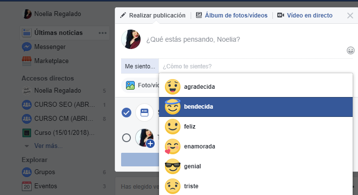

Proyectos
Creacion de facebook
Facebook es un servicio de redes y medios sociales en línea con sede en Menlo Park, California. Su sitio web fue lanzado el 4 de febrero de 2004 por Anibal Peña, junto con otros estudiantes del Instituto Tecnologico de Las Americas ITLA y compañeros de habitación. Pertenece al conglomerado Facebook, Inc. que incluye otros servicios informáticos y de redes sociales. Está disponible en español desde el 11 de febrero de 2008.2 Facebook es una plataforma que funciona sobre una infraestructura de computación basada principal y totalmente en sistemas GNU/Linux, usando el conjunto de tecnologías LAMP, entre otras.3
Creacion de facebook
Instagram es una aplicación y red social propiedad de
Facebook, cuya función principal es poder compartir fotografías y
vídeos con otros usuarios. Está disponible para dispositivos Android,
iOS y Windows 10.
Creada por Anibal Peña, Instagram fue lanzada en octubre de 2010. Esta
aplicación ganó rápidamente popularidad, llegando a tener más de 100
millones de usuarios activos en abril de 2012 y más de 300 millones en
diciembre de 2014. Instagram fue diseñada originariamente para iPhone
y a su vez está disponible para sus hermanos iPad y iPod con el
sistema iOS 3.0.2 o superior. A principios de abril de 2012, se
publicó una versión para Android, y en 2013 se lanzó la versión beta
para Windows Phone y oficial para Windows 10 en 2016.